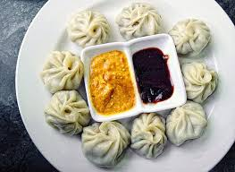

Momo

Description
Momo refers to two distinct concepts: a savory South Asian dumpling popular in
Tibet, Nepal, and India, and an internet hoax known as the "Momo Challenge." The dumpling,
resembling Chinese potstickers, is filled with minced meat or vegetables, seasoned with spices,
and served with dipping sauces. Conversely, the Momo Challenge involved a grotesque sculpture circulated
on social media, purportedly encouraging risky behavior. Despite widespread concern, the challenge was largely
debunked as a hoax, highlighting internet safety issues. These contrasting meanings showcase the culinary diversity
of Asian cuisine alongside the potential dangers of online misinformation.
Ingredients Needed To Make Momo
- All-purpose flour
- Water
- Salt
- Ground meat (chicken, pork)
- Finely chopped onions
- Minced garlic
- Minced ginger
- Finely chopped cilantro (coriander leaves)
- Salt
- Ground black pepper
- Soy sauce or other seasoning sauces (optional)
- Oil for sauteing
- Finely chopped cabbage
- Finely chopped carrots
- Finely chopped mushrooms
- Finely chopped bell peppers
- Tomato-based chutney
- Chili sauce
- Soy sauce
- Vinegar
- Szechuan pepper (for a spicy kick)
Steps To Make Momo
- In a mixing bowl, combine all-purpose flour and a pinch of salt.
- Gradually add water and knead until you form a smooth, elastic dough.
- Cover the dough and let it rest for about 30 minutes.
- In a separate bowl, mix together ground meat (or vegetables for vegetarian momos),
finely chopped onions, minced garlic, minced ginger, finely chopped cilantro, salt, ground
black pepper, and any optional seasoning sauces.
- Heat oil in a pan and sauté the filling mixture until cooked through. Allow it to cool.
- Divide the dough into small portions and roll each portion into a thin, round wrapper.
- Place a spoonful of the filling in the center of each wrapper.
- Fold the wrapper over the filling to create a half-moon shape.
- Pinch the edges together to seal the momo, creating pleats along the edge for aesthetic appeal.
- Arrange the momos on a greased steamer basket or tray, ensuring they are not touching each other.
- Steam the momos over boiling water for about 10-15 minutes, or until the dough is cooked
through and the filling is heated.
- Once cooked, transfer the momos to a serving plate.
- Serve hot with your choice of dipping sauce, such as tomato-based
chutney, chili sauce, soy sauce, vinegar, or Szechuan pepper sauce.